Particle systems are meant to create special effects. Particles are small elements (represented by a pixel or a little shape). Such particles move around according to predefined rules and can change color while they move. Many such particles together can create e.g. fireworks, flames, rain, snow, star fields, flying debris, etc.
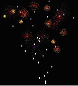
Game Maker contains an extensive particle system that can be accessed through functions. A more limited particle system can be accessed through the actions described below.
A particle system can deal with particles of different types. After creating the particle system the first thing to do is specify the particle types. Using the actions below you can specify up to 16 types of particles. Each type has a shape, a size, a start color and an end color. The color slowly changes from the start color to the end color. Particles have a limited life time. In the type you specify the minimal and maximal life time of the particles. Particles also have a speed and a direction. Finally, gravity and friction can work on particles.
After you specify the particle types you must create them at places in the room. You can either burst a number of particles of a particular type from a place or you can create a constant stream of particles appearing. Particles appear at emitters. The particle system can have up to 8 emitters working at the same time. So after you create the particle types you must create the emitters and tell them to burst or stream particles.
Here is the complete set of actions. Best experiment with them to get the required effect.
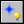 Create Part System
This action creates the particle system. It must be called before any other actions
can be used. You only need to call it once. You can specify the depth at which the
particles are drawn. If you use a large positive depth the particles appear behind
the instances. If you use a negative depth they appear in front of the instances.
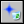 Destroy Part System
This action destroys the particle system, freeing all its memory. Don't forget to
call this (e.g. when you move to a different room) because particle systems use a lot of storage.
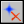 Clear Part System
This action removes all the particles currently visible. It does not stop the emitters
so new particles might be created again if you have streaming emitters (see below).
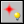 Create Particle
With this action you create a particle type. You can choose one of the 16 types
available. For the particle type you can specify its shape or the sprite to be
used for it. If you specify a sprite the sprite will be used. If you set the sprite
to no sprite, the shape will be used. There are a number of interesting built-in
shapes. You also indicated its minimal and
maximal size (when the particle appears a random value between these bounds is
used). Finally you specify the increase in size in each step. For a decrease, use
a negative value. Note that only a particle type is created, not an actual particle.
For this you need emitters (see below).
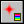 Particle Color
A particle can have a color (default the color is white). With this action you can
set the color to be used for a particular type. You must indicate the particle type
the color is defined for. Next you specify how a color is applied. Either a random
color is choosen between two given colors, or the color starts with the first color
and than gradually over the lifetime of the particle, it changes to the second color.
Both colors must be given. Finally you can indicate the alpha transparency. You specify
the transparency at the moment the particle is created and when it dies. The transparency
slowly changes between these values. It is normally nice to decrease the alpha value over the
lifetime of a particle.
Particle Life
A particle lives for a limited number of steps. After this is disappears. With this
action you set the life time for a particle type. You give two limiting values and the actual
life time is chosen randomly between them.
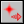 Particle Speed
With this action you can set the speed and direction of motion for a particle type.
Again you give two limits and the actual value is chosen randomly between them. For
example, to make the particle move in a random direction, give 0 and 360 for the
limits for the direction. You can also specify a friction. This amount is subtracted
from the speed in each step until it becomes 0. (You can make a particle speed up
by using a negative friction.)
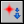 Particle Gravity
With this action you set the amount of gravity and direction of gravity for a
particular particle type. 270 is downwards.
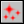 Particle Secondary
This is a bit more complicated. Particles can create other particles during their
life time and when they die. With this action you can specify this. You can define
the type and number of particles that must be created at each step during the life
time and you can specify the type and number of particles that must be created when
the particle dies. Be very careful here. You can easily create huge numbers of
particles in this way, slowing down the system considerably. For the numbers you
can also use a negative value. A negative value x means that in each step a
particle is created with chance -1/x. So for example, if you want to generate a
secondary particle about every 4 steps, use a value of -4. Secondary particles
are great for creating effects like tails of particles or exploding particles.
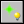 Create Emitter
This action creates a particle emitter. Particles are generated by emitters.
You can have up to eight emitters. Choose the emitter and specify the shape of
it and its size and position (in the form of a bounding box).
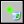 Destroy Emitter
This action destroys the indicated emitter. Note that existing particles that
came from this emitter are not removed.
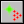 Burst from Emitter
Even if you defined a particle type and an emitter there are still no particles.
You still have to tell the emitter to generate the particles. With this action you
tell a particular emitter to generate a given number of particles of a given type.
All these particles are generated at once. For the number you can also use a negative
value. A negative value x means that a particle is created with chance -1/x. So for
example, if you want to generate a particle with a chance of 25 percent, use a value of -4.
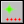 Stream from Emitter
With this action you tell a particular emitter to stream a given number of particles
of a given type. In each step this number of particles is generated, leading to a
continuous stream of particles. The emitter will continue streaming particles until
you destroy it or tell it to stream 0 particles. For the number you can also use a
negative value. A negative value x means that in each step a particle is created
with chance -1/x. So for example, if you want to generate a particle about every
4 steps, use a value of -4.